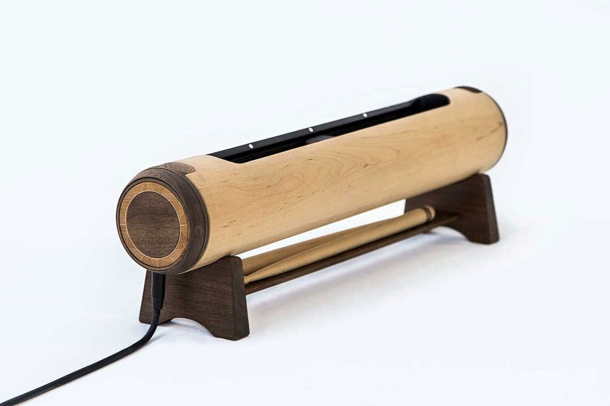

Projects
A collaborative project within the Mobile Makerspace
Initiative would involve students, teachers, and local
community members working together to address
real-world challenges or create innovative
solutions, such as building an automated vertical
garden, developing unique cultural experiences
through technology, or engineering small-scale
flying vehicles. High schools would benefit from
the opportunity to integrate cutting-edge
STEAM concepts into their curricula, while
teachers would gain valuable professional
development and hands-on experience.
The community would be engaged through
access to the resources during the course
of the year and public showcases of these
diverse and high impact projects,
fostering a sense of collective pride and
accomplishment. Ultimately, these
collaborative efforts would contribute to
a brighter future for innovation and
technology in Aotearoa by nurturing
the next generation of creative
thinkers, problem solvers, and skilled
professionals, ensuring the nation
remains at the forefront of global
education.
The kaupapa behind the projects
is decided in collaboration
ahead of time with each
school, ensuring we’re
responsive to the community
we join. School holiday
periods are used to upskill
and prepare for the next
project.
Below are some examples of what projects could look like

Creating a Vertical Garden with Automation and Interactive Statistic Interfaces
Students will design and construct a
vertical garden, incorporating automated
watering and feeding systems. They will
also create interactive interfaces that track
and display various statistics such as plant
growth, water usage, and nutrient levels. This would be in a purpose built space like a sapre room or container on-site which would continue to be used and developed long after the year residency.
Technology, Mathematics,
Science, Digital Technologies, Design and
Visual Communication, Horticulture, Mathematics,
Biology
Design thinking,
systems engineering, automation, data analysis,
problem-solving, computational thinking,
sustainability

Creating Kapa Haka Costumes with Neopixel LEDs
Students will design and create Kapa Haka costumes
incorporating Neopixel LEDs. They will code these LEDs
to create a light show that reflects the narrative (pūrakau)
of performances that they will create that year and continue to create with the new skills developed at the school.
Technology, Arts, Te Reo Māori
Digital Technologies, Textile Technology, Dance,
Drama, Māori Performing Arts, Te Reo Māori
Electrical engineering, coding,
design thinking, systems thinking, creativity, cultural awareness

Re-imagining Instruments from across the Pacific (Image - Made by Rachel Hall)
Students will research traditional Pacific instruments, then design,
build, and play a new generation of these instruments, combining
traditional elements with modern innovations.
Technology, Arts, Social Sciences, Music, Design and Visual Communication, Wood Technology,
Social Studies, History
Acoustical engineering, design thinking,
innovation, cultural awareness, craftsmanship

Motion Capture Sport Analysis Systems
Motion Capture Sport Analysis Systems
Students will learn about and use motion capture technology to analyse
sports performances. They will then use this analysis to develop models for
performance improvement.
Technology, Health and Physical Education, Mathematics, Digital Technologies, Physical Education, Mathematics, Health Science
Biomechanical engineering, data analysis, software
engineering, problem-solving, computational thinking, sports science